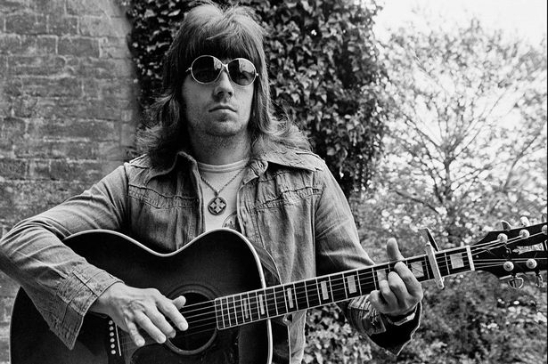
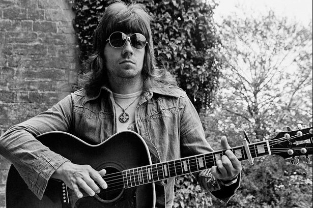

Andy Scott
Glam Rock Guitar Icon
A life time as a top guitarist, admired by his peers,
loved by diehard Sweet fans for keeping the music alive.
A life time as a top guitarist, admired by his peers,
loved by diehard Sweet fans for keeping the music alive.
 The Sweet
In the late summer of 1970, Scott replaced Mick Stewart in The Sweet after an audition in front of Brian Connolly, Steve Priest and Mick Tucker, as well as group managers Nicky Chinn and Mike Chapman.

The Sweet
In the late summer of 1970, Scott replaced Mick Stewart in The Sweet after an audition in front of Brian Connolly, Steve Priest and Mick Tucker, as well as group managers Nicky Chinn and Mike Chapman.
